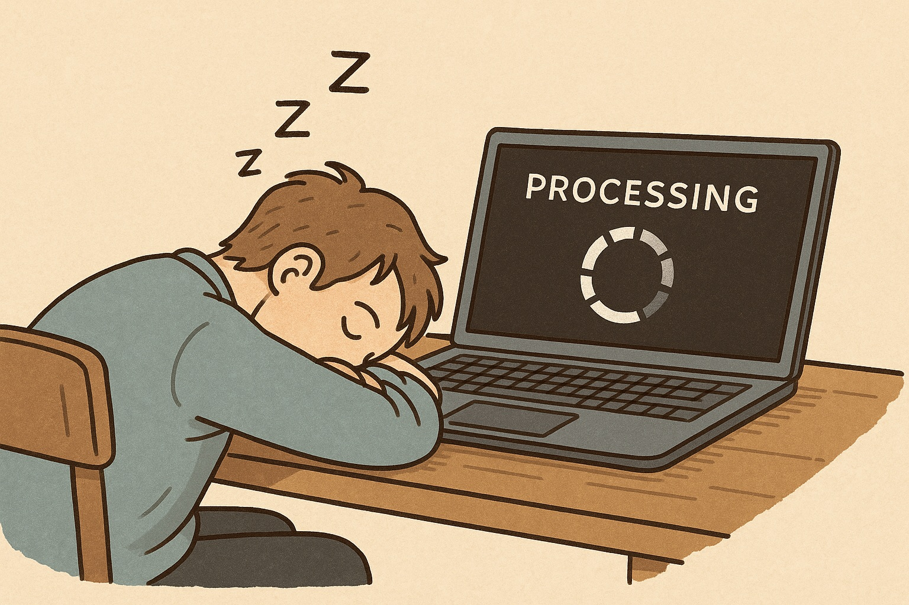

Evgeny Metelkin
2025-10-04

When you run long Julia simulations or heavy computations on a laptop, you don't want your machine to fall asleep in the middle of the job.
On Windows, macOS, or Linux, the system may suspend itself even if Julia is still crunching numbers — leading to wasted time, broken HTTP calls, or stalled jobs.
This is the reason NoSleep.jl exists: a lightweight cross-platform Julia package that prevents your machine from falling asleep during long computations.
SetThreadExecutionState.caffeinate tool.systemd-inhibit.Each backend is safe: once your block finishes (or Julia exits), the inhibitor is released automatically.
Block form
using NoSleep
with_nosleep() do
# Your long computation
endKeep the display awake too
with_nosleep(; keep_display=true) do
# Your long computation
endSaves you from wasted hours if the OS suspends mid-job. No frustration.
Useful when running code overnight or unattended.
Cross-platform: works out of the box on Windows, macOS, and Linux.
Does not prevent suspend/hibernate when you close the lid or press the laptop's power button — it only blocks automatic idle sleep.
Feedback and contributions welcome: GitHub repo.
License: CC-BY-4.0